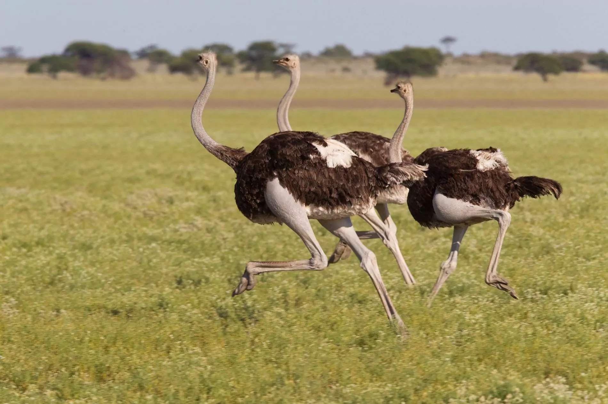

avestruzes
esta página originalmente serviria para postar os devaneios de uma avestruz intelectual
mas devido a uma crise existencial, fui para as florestas visitar meus parentes e tive algumas realizações incriveis
voltei para minha casa pensando que poderia fazer algo para minha espécie; eis o motivo da criação desta página sobre as avestruzes
você pode começar pela página curiosidades, onde explico de onde vem as avestruzes e para onde vão elas
a página pesquisa serve para os curiosos que não se contentaram com o que digo
a página cultura serve para te mostrar os bicos famosos que meus parentes fizeram
por fim, a página quiz serve para você testar seus conhecimentos sobre meus parentes